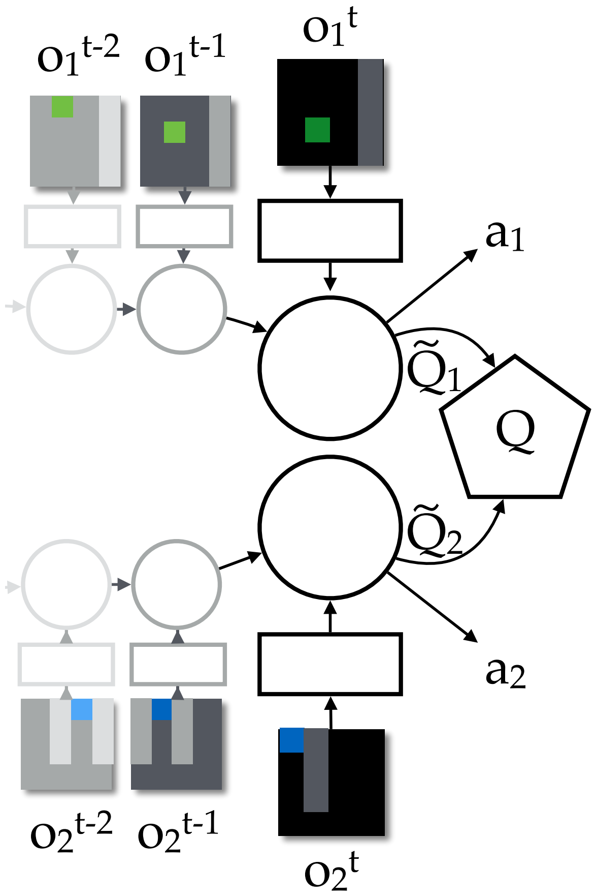
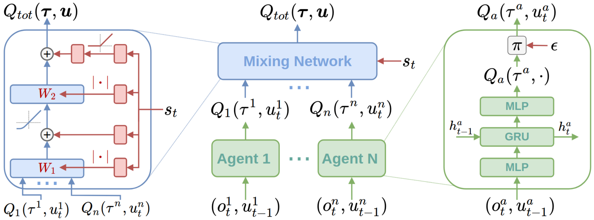
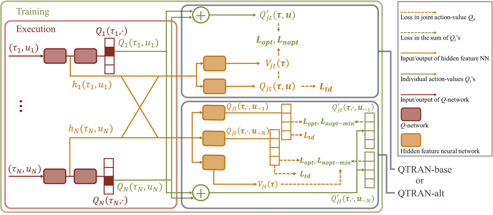

多智能体价值学习
VDN（Value Decomposition Network）
在完全合作关系、局部观测和去中心化执行框架下，无法像单智能体场景下的 Q-Learning 中学习一个全局值函数 q(s, a) 来进行决策 a^=argmaxaq(s, a)。VDN 算法将全局值函数近似为局部值函数的直接加和：
qw(ht, at)=q1(ht1, at1∣w1)+q2(ht2, at2∣w2)+⋯+qn(htn, atn∣wn)
并使用 TD 误差的平方作为中心化训练损失函数来更新值网络参数：
ℓ(w)=2m1j=1∑m[rj+γaargmaxqw−(sj′, a)−qw(sj, aj)]2

由于全局值函数和每个智能体的局部值函数的单调关系，在去中心化执行时联合动作的选择可以表示为：
a^t=aargmaxqw(ht, a)=⎝⎜⎜⎜⎜⎜⎜⎜⎜⎜⎛argmaxa1q1(ht1, a1∣w1)argmaxa2q2(ht2, a2∣w2)⋮argmaxanqn(htn, an∣wn)⎠⎟⎟⎟⎟⎟⎟⎟⎟⎟⎞
QMIX
VDN 中的价值分解为简单的加和，无法捕捉复杂的价值分解关系，QMIX 将价值分解通过神经网络来近似：
q(ht, at)=f[q1(ht1, at1), q2(ht2, at2), ⋯, qn(htn, atn) ∣∣∣∣ st]
其中，f 利用了中心化训练下的全局状态 st 并使用 hypernetwork 来建模网络参数：

为了保证全局值函数和局部值函数的单调关系以方便去中心化执行，QMIX 限制 f 满足单调性：
∂qi∂f≥0i=1, 2, ⋯, n
在实现时将权重取绝对值并使用单调的激活函数来实现单调映射，并同样采用 TD 误差来更新参数。
QTRAN
使用独立值函数进行决策的条件是全局值函数分解为局部值函数后满足条件（IGM）：
aargmaxq(ht, a)=⎝⎜⎜⎜⎜⎜⎜⎜⎜⎜⎛argmaxa1q1(ht1, a1)argmaxa2q2(ht2, a2)⋮argmaxanqn(htn, an)⎠⎟⎟⎟⎟⎟⎟⎟⎟⎟⎞
VDN 和 QMIX 分别通过直接加和以及单调映射假设来满足 IGM 条件，而 QTRAN 则假设存在 q1:n 使得：
q′(h, a)=i=1∑nqi(hi, ai)+v(h)≤i=1∑nqi(hi, a^i)+v(h)=q′(h, a^)
可以被构造为全局值函数 q(h, a) 的紧上界，其中 v(h) 为偏置补偿，其中紧上界的条件为：
|
optq(h, a^)=q′(h, a^)≥noptq′(h, a)≥q(h, a)
|
|
|
满足 opt 和 nopt 两个条件后局部值函数 qi(hi, a^i) 满足 IGM 条件，QTRAN-base 基于此设计的损失函数为：
L=Ltd+λoptLopt+λnoptLnopt
| 损失函数 |
训练对象 |
目标 |
| Ltd=[r+γmaxaq−(h, a)−q(h, a)]2 |
全局值函数 |
近似真实全局值函数 |
| Lopt=[q′(h, a^)−sgq(h, a^)]2 |
局部值函数 |
近似满足 opt 条件 |
| Lnopt=[min(q′(h, a)−sgq(h, a), 0)]2 |
局部值函数 |
近似满足 nopt 条件 |
由于 nopt 条件的限制构造的上界较为松弛，导致对于 nopt 动作下的局部值函数学习效果较差。为了构造更加紧的上界，QTRAN 在 nopt 条件的基础上提出了一个更强的 nopt-min 约束条件：
aimin[q′(h, ai, a−i)−q(h, ai, a−i)]=0∀ i∈{1, 2, ⋯, n}
通过 nopt-min 条件可以推出 nopt 条件。而如果局部值函数 q1:n 满足 nopt 条件，同时存在 i 和 a−i 使得：
aimin[q′(h, ai, a−i)−q(h, ai, a−i)]=β>0
那么必然存在 aj∈a−i 使得 aj=a^j，否则不满足 opt 条件。将该点的局部值函数进行调整：
|
qj(hj, aj)←qj(hj, aj)−β
|
|
|
以上操作不会破坏最优点 a^ 的性质，同时 nopt 条件保证了 q′(h, a) 的下界，因此重复以上操作会得到一组满足 nopt-min 条件的局部值函数 q1:n。QTRAN-alt 基于此将损失函数 Lnopt 替换为反事实的 Lopt−min：
Lnopt−min=i=1∑n[aimin(q′(h, ai, a−i)−sgq(h, ai, a−i))]2
